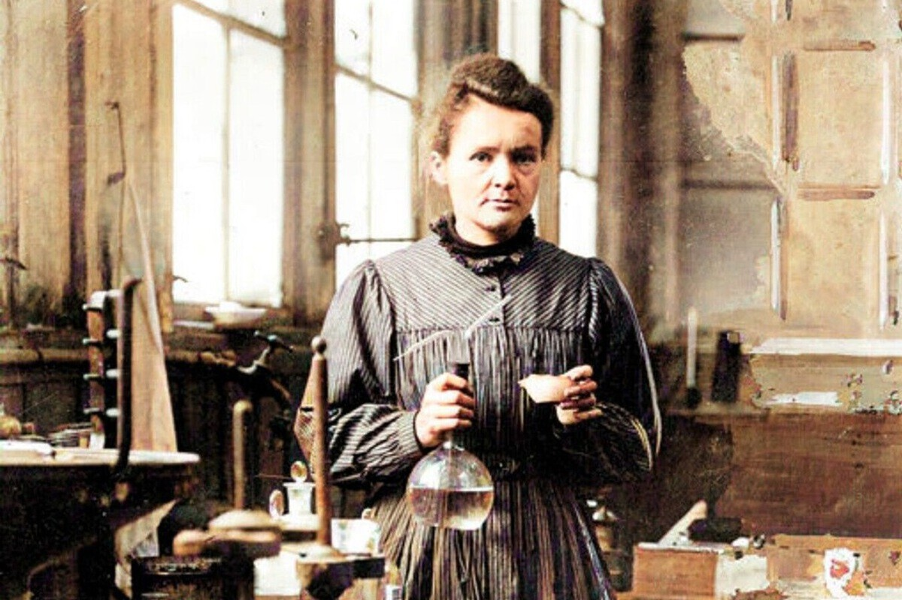

Meu primeiro post
Por: Tatiana Burkater
Boas-vindas ao meu novo blog! Aqui vou compartilhar fatos científicos e curiosidades do dia a dia explicados de um jeito leve e sem complicações. Um espaço para quem gosta de entender como o mundo funciona, sem termos difíceis
"Na vida, não existe nada a temer, mas a entender." — Marie Curie